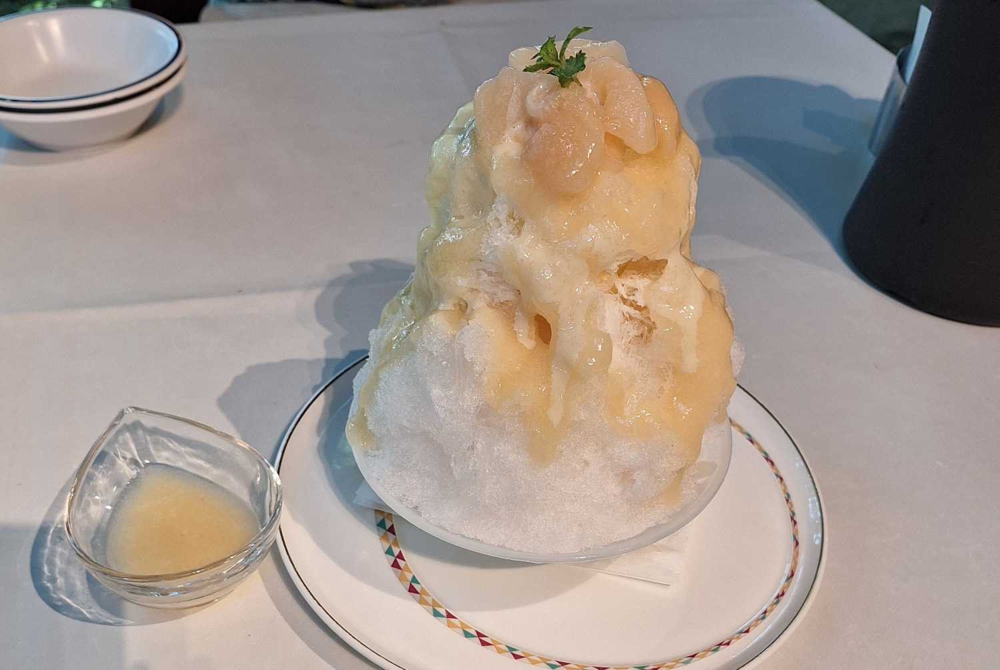
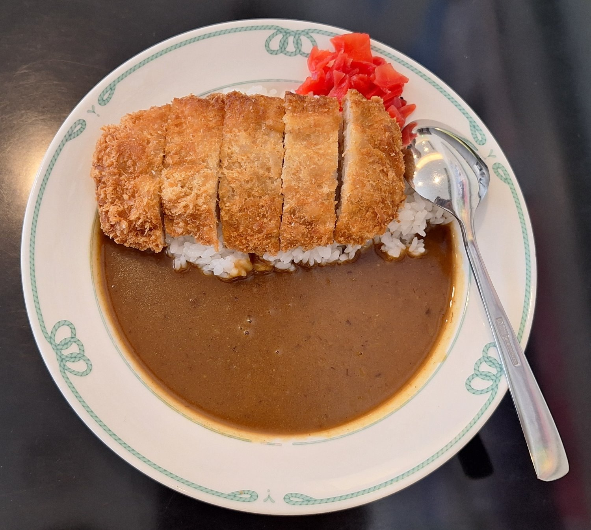
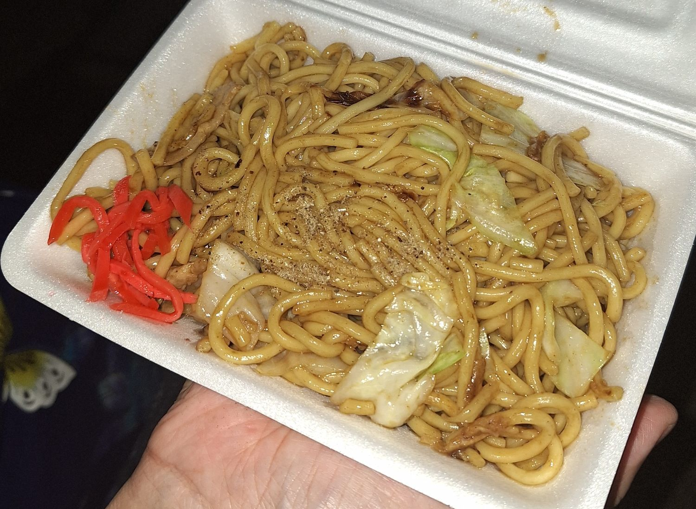

觀光景點區美食
在觀光景點區尋找美食，本身就是一場有趣的探索，它可能是一次無需費力的味覺體驗，也可能是在眾多選擇中，意外發掘出隱藏版道地美味的驚喜，為旅途增添一筆值得回味的記憶。

道の駅 内子フレッシュパークからり(道路休息站 內子新鮮公園KaRaRi )-附設餐廳
這是一間以「地產地銷」為理念的餐廳，訪客能在此品嚐到內子豬肉等在地特色食材所製成的料理，並享用附設的當地新鮮蔬菜沙拉吧，在窗外自然景色的陪伴下，愜意地享受內子町的美味。

愛媛県総合科学博物館餐廳
這是一間在科學博物館內，提供咖哩、烏龍麵、定食及輕食等多樣化餐點的餐廳，為參觀民眾提供了一個可以輕鬆用餐的方便選擇。

四國水族館-kitchen setouchi
提供融入了海豚、海獺等水族館生物元素的特色餐點而聞名，為遊客在參觀之餘，帶來了兼具視覺與味覺趣味的用餐體驗。

エミフル MASAKI美食街
提供多元化餐飲選擇的大型美食廣場，從日式、中式、韓式料理到漢堡、甜點等應有盡有，並設有適合親子共餐的座位區，能滿足不同年齡層顧客的用餐需求。

道後溫泉商店街美食
道後溫泉商店街是一條充滿活力的拱廊街，匯集了各式在地小吃與美食，讓人在享受溫泉文化之餘，也能透過邊走邊吃的方式，體驗道後獨有的魅力。

讚岐高松祭屋台
讚岐高松祭的美食屋台提供了一個品嚐當地特色與感受祭典熱鬧氛圍的絕佳機會，從經典的炒麵、章魚燒，到香川特有的讚岐烏龍麵、骨付鳥等在地美食應有盡有，讓參與者能在享受花火與遊行之餘，也能大飽口福。
留言板